الطاقة الإنتاجية السنوية
عام 1997
طن متري
1997
توسعة الطاقة الإنتاجية
السنوية في 2017
طن متري
2017
الطاقة الإنتاجية السنوية
بعد تحول الأعمال
طن متري
الآن
ينتج مرفق ينبع حاليا زيت الأساس من الفئة الأولى (أرامكو دورا بي إس 150) وزيوت الأساس من الفئة الثانية كمنتجات رئيسية، كما ينتج الديزل ذا المحتوى فائق الانخفاض من الكبريت، والنافثا، وسائل الحفر، وزيت وقود السفن الثقيل، ومستخلص برايت ستوك، والكبريت كمنتجات ثانوية.
بدأ تشغيل مرفق ينبع في عام 1997 لإنتاج زيوت الأساس عالية الجودة من الفئة الأولى بطاقة إنتاجية تقارب 300 ألف طن متري سنويا. وكان المرفق ينتج أرامكو دورا 150، وأرامكو دورا 500، وأرامكو دورا بي إس 150 حتى نوفمبر 2017.
استكملت لوبريف مشروع التوسعة الأولى للمرفق بنهاية 2017، مما مكن المرفق من إنتاج زيوت الأساس من الفئة الثانية أرامكو بريما 70، وأرامكو بريما 110، وأرامكو بريما 230، وأرامكو بريما 500، وأرامكو دورا بي إس 150 كمنتجات رئيسية، علاوة على الديزل ذي المحتوى فائق الانخفاض من الكبريت، والنافثا، وسائل الحفر، وزيت وقود السفن الثقيل، ومستخلص برايت ستوك والكبريت كمنتجات ثانوية. ومع تشغيل المرفق بعد انتهاء مشروع التوسعة الأولى، بلغت الطاقة الإنتاجية نحو مليون طن متري شملت طاقة إنتاجية قدرها 710 آلاف طن متري لزيوت الأساس من الفئة الثانية. أدى ذلك لزيادة إجمالي الطاقة الإنتاجية للشركة من زيوت الأساس (في مرفقي ينبع وجدة) إلى نحو 1.255 مليون طن متري سنويا بنهاية 2017.
في عام 2021 بلغت الطاقة الإنتاجية لمرفق ينبع نحو 1.07 مليون طن متري بعد زيادة الطاقة الإنتاجية لبعض الوحدات في إطار مبادرات التحول، وبلغ إجمالي الطاقة الإنتاجية للشركة من زيوت الأساس في مرفقي ينبع وجدة نحو 1.345 مليون طن متري سنويا.
في 2023 أنجزت الشركة مزيداً من التحسينات، ما أدى إلى زيادة قدرها 110 آلاف طن متري في الطاقة الإنتاجية لزيوت الأساس من الفئة الثانية، ما رفع بدوره إجمالي الطاقة الإنتاجية للشركة إلى 1.455 مليون طن متري سنويا من زيوت الأساس. وتعمل لوبريف على تنفيذ مشروع التوسعة الثانية لمرفق ينبع الذي من المخطط اكتماله في عام 2025.

إنتاج موثوق لزيوت الأساس من الفئة الأولى
طناً مترياً
الطاقة الإنتاجية السنوية بعد التشغيل
طناً مترياً
الطاقة الإنتاجية السنوية بعد التحسين والتكامل